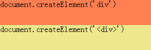
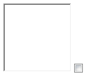
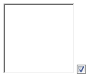

根据 W3C DOM Level2 Core 规范中的描述，Document 接口下的 createElement 方法可以创建一个元素节点对象实例。它可以传入一个字符串参数 tagName，在 HTML 中，这个参数可以是任何形式，必须是映射到可由 DOM 实现的符合规范的大写形式。即，tagName 应为一个合法的标签名。
若 tagName 中出现不合法的字符，则应抛出 INVALID_CHARACTER_ERR 异常。
关于 createElement 方法的更多资料，请参考 DOM Level2 Core 规范 Interface Document 的内容。
在 IE6 IE7 IE8 中，createElement 方法不仅可以通过合法的标签名创建节点对象，还可以通过传入一段合法的 HTML 代码字符串作为参数创建节点对象。
若使用了 IE 特有的通过为 createElement 传入一段合法的 HTML 代码字符串作为参数创建节点对象的方法，则在其他浏览器中将会抛出异常，并导致后续代码无法执行。
| IE6 IE7 IE8 |
|---|
根据 MSDN 中的关于 createElement 方法的描述，
Attributes can be included with the sTag as long as the entire string is valid
HTML.
IE 中的 createElement 方法不仅可以通过合法的标签名创建节点对象，还可以通过传入一段合法的 HTML 代码字符串作为参数创建节点对象。
关于 IE 中 createElement 方法的更多资料，请参考 MSDN createElement Method 中的内容。
分析以下代码：
<html> <head> </head> <body> <script> window.onload = function () { var
div1 = document.createElement('div'); div1.style.cssText = "width:300px; height:50px;
background:coral;"; div1.innerHTML = "document.createElement('div')";
document.body.appendChild(div1); try { var div2 = document.createElement('<div
style="width:300px; height:50px; background:khaki;">'); div2.innerHTML =
"document.createElement('<div>')"; document.body.appendChild(div2); } catch (e)
{ alert(e); } } </script> </body> </html>
上面代码首先通过 createElement 方法创建了一个粉红色 DIV 元素并追加至 BODY 上，随后又创建了一个土黄色 DIV 元素也追加至 BODY 上，但第二个 DIV 元素创建时传入的不是标签名“DIV”而是一串字符串构成的 HTML 代码。
在各浏览器中运行结果为：
| IE6 IE7 IE8 | Firefox | Chrome | Safari | Opera |
|---|---|---|---|---|
|  | ||||
| 错误提示： | ||||
| 无 | [Exception... "String contains an invalid character" code: "5" nsresult: "0x80530005 (NS_ERROR_DOM_INVALID_CHARACTER_ERR)" | Error: INVALID_CHARACTER_ERR: DOM Exception 5 | Error: INVALID_CHARACTER_ERR | |
可见，仅 IE6 IE7 IE8 中的 createElement 方法支持传入一段合法的 HTML 代码字符串做为参数。
而其他浏览器均遵照规范抛出了 INVALID_CHARACTER_ER 异常。
看似使用 W3C 规范中的标准的为 createElement 方法传入标签名的做法在各浏览器中均可以正确创建出节点，但在 IE6 IE7 IE8 中却有一些问题，看如下代码：
<html> <head> </head> <body> <script> window.onload = function () { var
iframe = document.createElement('iframe'); iframe.name = "iframe"; iframe.width = 100;
iframe.height = 100; document.body.appendChild(iframe); var input = document.createElement('input');
input.name = "input"; input.type = "checkbox"; input.checked = true;
document.body.appendChild(input); alert(window.frames["iframe"]);
alert(document.getElementsByName("input").length); } </script> </body>
</html>
上面代码动态创建了一个 IFRAME 元素和一个 type 为 checkbox 的 INPUT 元素，均追加至 BODY 中。随后检测了这两个元素的 name 属性是否有效。
在各浏览器中运行结果为：
| IE6 IE7 IE8(Q) | IE8(S) Firefox Chrome Safari Opera | |
|---|---|---|
|  |  | |
| window.frames["iframe"] | undefined | [object Window] |
| document.getElementsByName("input").length | 0 | 1 |
这时候 IE 特有的通过为 createElement 传入一段合法的 HTML 代码字符串作为参数创建节点对象的方法就可以派上用场，若上面的测试代码改为：
... var iframe = (document.all) ? document.createElement('<iframe name="iframe">') :
document.createElement('iframe'); iframe.name = "iframe"; iframe.width = 100; iframe.height =
100; document.body.appendChild(iframe); var input = (document.all) ? document.createElement('<input
name="input" checked />') : document.createElement('input'); input.name =
"input"; input.type = "checkbox"; input.checked = true;
document.body.appendChild(input); alert(window.frames["iframe"]);
alert(document.getElementsByName("input").length); ...
这时候在所有浏览器中均可以返回正常的结果。
对于一般的非替换元素，在各浏览器中均使用 W3C 规范中的标准的为 createElement 方法传入标签名的做法。
对于一些 IE 处理有问题的替换元素，则注意判断浏览器，针对 IE 使用其特有的通过为 createElement 传入一段合法的 HTML 代码字符串作为参数的方法，非 IE 浏览器仍然使用 W3C
规范的标准方法。
| 操作系统版本: | Windows 7 Ultimate build 7600 |
|---|---|
| 浏览器版本: |
IE6
IE7 IE8 Firefox 3.6.7 Chrome 6.0.472.0 dev Safari 5.0 Opera 10.60 |
| 测试页面: | createElement.html |
| 本文更新时间: | 2010-07-23 |
document createElement element html string tagName attribute 创建